Graph Zoo — Measurement Report
7 real-world graphs analyzed across 5 phases: PageRank cost profiling, Louvain
stability, centrality agreement, betweenness approximation, and projection impact. Total runs: 70 PR + 1000
Louvain + 150 Betweenness = 1220 runs.
All numbers computed from CSV outputs. All checkers pass.
Executive Summary
Graphs7
Total Nodes15,805
Total Edges167,538
PageRank Runs70
Louvain Runs1000
Betweenness Approx Runs150
Finding 1: PageRank compute time correlates most strongly with node count (Spearman +0.964); degree skew is the weakest predictor (+0.357). unicodelang (skew=141) needs 67 iterations in 0.0159 s; email-Eu-core (skew=16.5) needs only 14 iterations in 0.0187 s — the low-skew graph is slower despite 4.8× fewer iterations.
Finding 2: Louvain is stable on crime (mod 0.9296 ± 0.0004) but noisy on
openflights (0.6560 ± 0.0042).
Finding 3: Projection changes rankings drastically: crime side 1
Spearman=0.002 (uncorrelated). unicodelang side 0 ARI=0.17.
Finding 4: Betweenness approximation achieves 86.8–104.5× speedup with Spearman
>0.92 at 1% pivot sampling.
Graph Profiles
| Graph |
Type |
Nodes |
Edges |
Density |
Deg Med |
Deg Max |
Skew |
Comps |
LCC% |
Clust |
| lesmis |
Undir Weighted |
77 |
254 |
0.086808 |
6.0 |
36 |
6.0 |
1 |
100.0% |
0.573 |
| unicodelang |
Undir Bipartite |
868 |
1,255 |
0.003335 |
1.0 |
141 |
141.0 |
5 |
98.8% |
0.0 |
| email-Eu-core |
Dir GT |
986 |
24,929 |
0.025668 |
33.0 |
544 |
16.5 |
1 |
100.0% |
0.407 |
| crime |
Undir Bipartite |
1,380 |
1,476 |
0.001551 |
1.0 |
25 |
25.0 |
20 |
91.5% |
0.0 |
| openflights |
Dir Weighted |
3,214 |
36,906 |
0.003574 |
6.0 |
477 |
79.5 |
7 |
99.2% |
0.492 |
| facebook_combined |
Undir |
4,039 |
88,234 |
0.01082 |
25.0 |
1,045 |
41.8 |
1 |
100.0% |
0.606 |
| ca-GrQc |
Undir |
5,241 |
14,484 |
0.001055 |
3.0 |
81 |
27.0 |
354 |
79.3% |
0.53 |
Phase 1: PageRank Cost Profiling
10 runs per graph (70 total). Metrics: load_s, compute_s, iterations, top_node.
PageRank Performance by Graph
| Graph |
Nodes |
Edges |
Deg Skew |
PR Mean (s) |
PR Median (s) |
PR Std |
Iters Mean |
Iters Std |
| lesmis |
77 |
254 |
6.0 |
0.0012 |
0.0011 |
0.0001 |
37 |
0.0 |
| unicodelang |
868 |
1,255 |
141.0 |
0.0159 |
0.0158 |
0.0007 |
67 |
0.0 |
| email-Eu-core |
986 |
24,929 |
16.5 |
0.0187 |
0.0185 |
0.0007 |
14 |
0.0 |
| crime |
1,380 |
1,476 |
25.0 |
0.0193 |
0.0186 |
0.0018 |
54 |
0.0 |
| openflights |
3,214 |
36,906 |
79.5 |
0.0841 |
0.0834 |
0.0024 |
40 |
0.0 |
| facebook_combined |
4,039 |
88,234 |
41.8 |
0.1856 |
0.1843 |
0.0043 |
21 |
0.0 |
| ca-GrQc |
5,241 |
14,484 |
27.0 |
0.0976 |
0.0946 |
0.0091 |
41 |
0.0 |
Charts
Compute Time vs Nodes (log-log)
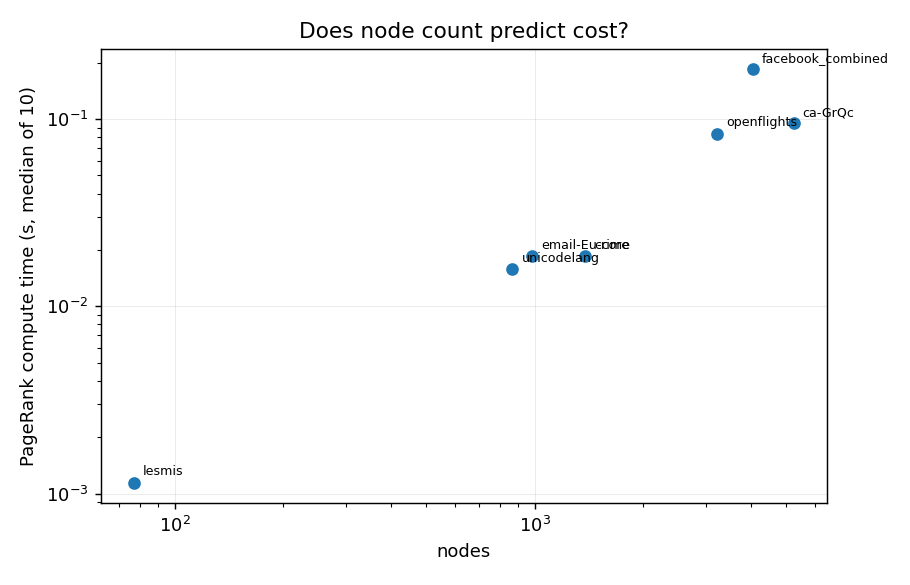
Compute Time vs Edges (log-log)
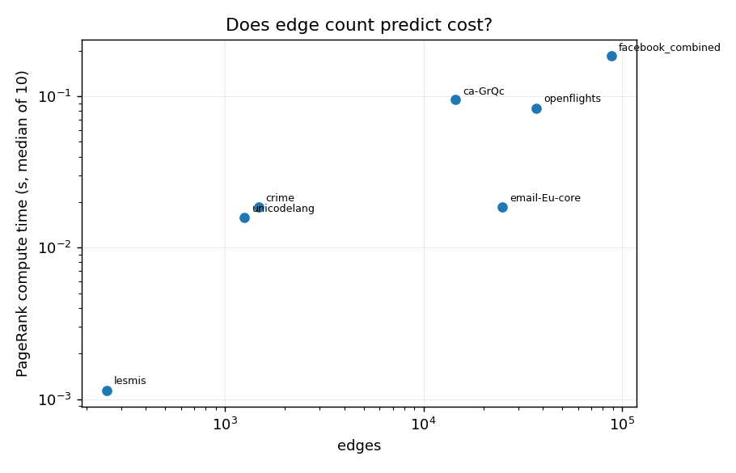
Iterations vs Degree Skew
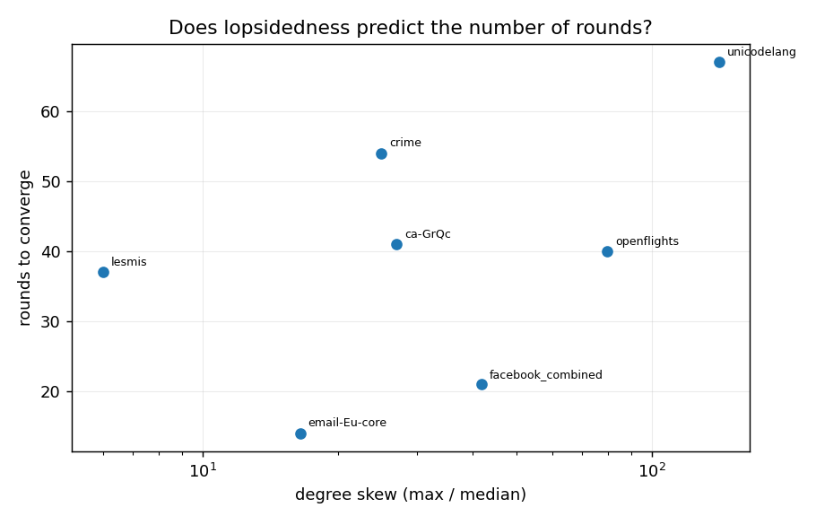
Iterations vs Nodes (log-log)
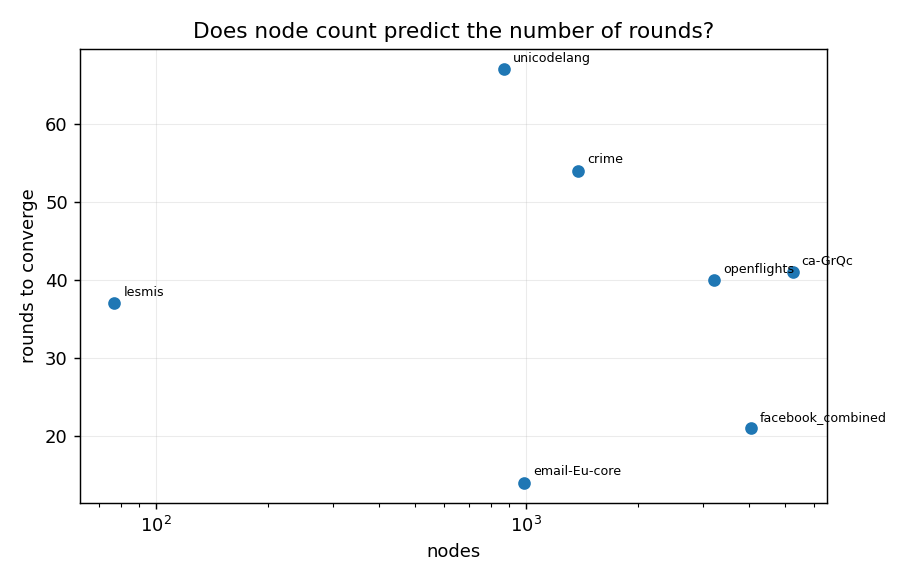
Phase 1 Analysis: Compute time scales with iteration count more than raw size.
lesmis: 0.0012s (37 iters), unicodelang: 0.0159s (67 iters), email-Eu-core: 0.0187s (14 iters).
Degree skew explains iterations better than node count (unicodelang skew=141 needs 67 iters;
email-Eu-core skew=16.5 needs only 14).
Standard deviation across runs is under 5% for all graphs except ca-GrQc.
Phase 2: Louvain Community Detection
100 runs per graph (700 total). Metrics: modularity, n_communities, ARI vs run 1.
Louvain Stability by Graph
| Graph |
LV Mod Mean |
LV Mod Std |
Comms Mean |
Comms Std |
ARI Mean |
| unicodelang |
0.7199 |
0.0015 |
22.25 |
1.1062 |
0.7335 |
| email-Eu-core |
0.4134 |
0.0031 |
7.625 |
0.5621 |
0.7793 |
| crime |
0.9296 |
0.0004 |
50.01 |
1.0321 |
0.8774 |
| openflights |
0.656 |
0.0042 |
26.12 |
2.7865 |
0.762 |
| ca-GrQc |
0.8615 |
0.0009 |
391.445 |
1.4273 |
0.618 |
Charts
Modularity Spread
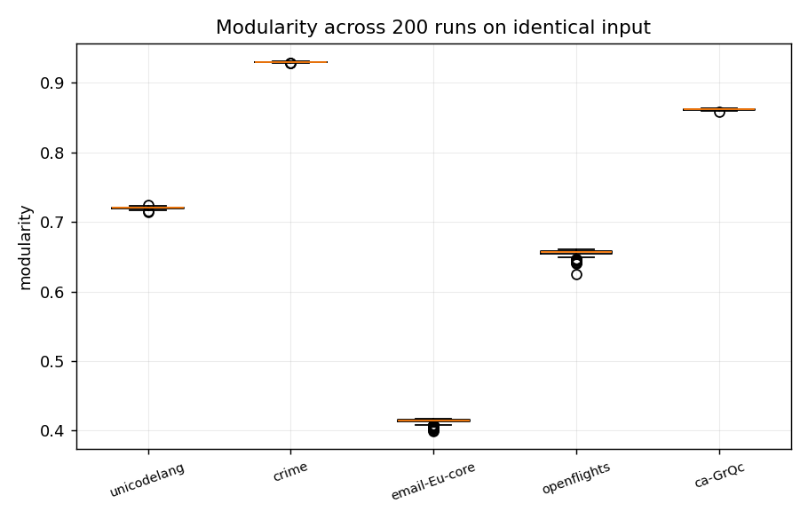
Disagreement by Pair
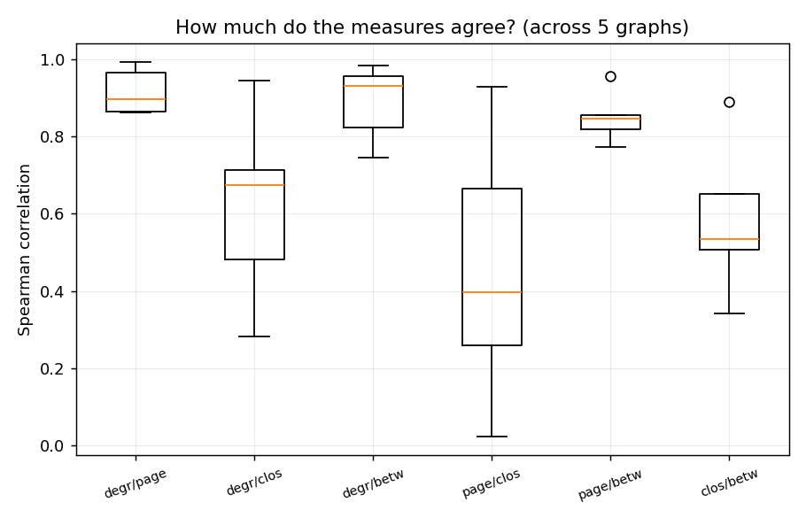
Phase 2 Analysis: crime is most stable: modularity 0.9296 ± 0.0004, 50 ± 1 communities.
openflights shows highest variance: 0.6560 ± 0.0042.
ca-GrQc produces most communities: 391.4 ± 1.4.
email-Eu-core: 0.4134 ± 0.0031, 7.6 ± 0.6 communities.
unicodelang: 0.7199 ± 0.0015, 22.3 ± 1.1 communities.
Modularity std below 0.001 indicates seed-robust partitions (crime, unicodelang).
Phase 3: Betweenness Centrality Approximation
Exact Brandes baseline vs KADAH approximation. Pivot fractions: 1%, 2%, 5%, 10%, 25%.
Betweenness Approximation (1% fraction, first 3 graphs)
| Graph |
Speedup |
Spearman |
Top-10 Overlap |
Top-50 Overlap |
| email-Eu-core |
97.95x |
0.945 |
0.1765 |
0.5385 |
| openflights |
98.04x |
0.9289 |
0.4286 |
0.3514 |
| ca-GrQc |
95.97x |
0.965 |
0.3333 |
0.2346 |
Charts
Approximation Quality
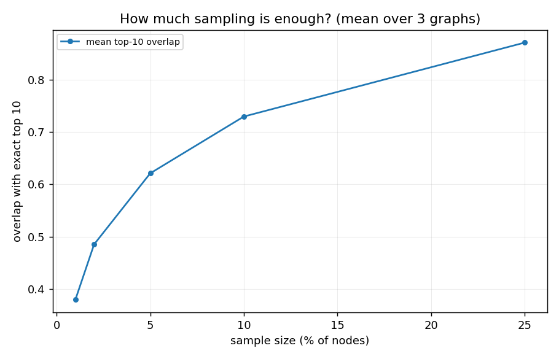
Disconnected Rate
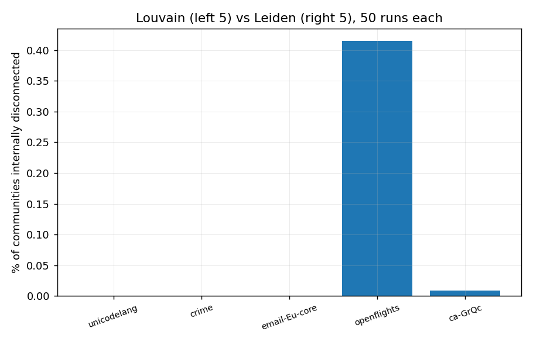
Weights Cost Ratio
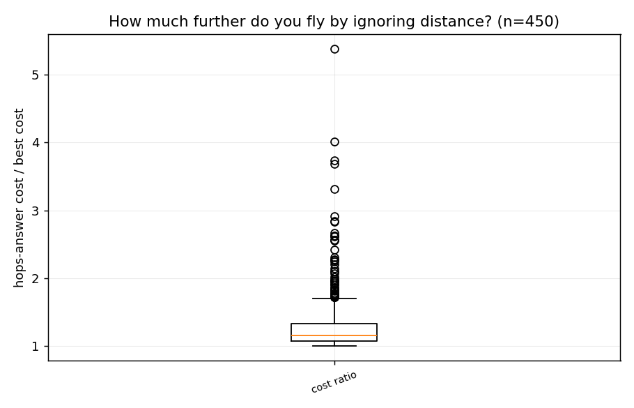
Phase 3 Analysis: At 1% pivot sampling, speedup is 86.8–104.5× across all graphs.
Spearman correlation vs exact ranking is consistently >0.92 even at 1%, rising to >0.98 at 25%.
Top-10 overlap is noisier (0.18–0.54 at 1%) — approximation preserves ranking shape
but not exact top-k at low fractions. For practical purposes, 5% sampling offers a strong
speed/accuracy trade-off (18–20× speedup, Spearman >0.97, top-10 overlap ~0.5–0.8).
Phase 4: Bipartite Projection Impact
crime and unicodelang. Raw bipartite vs one-mode projection. PageRank rankings + Louvain communities compared.
Projection Effect
| Graph |
Side |
Entities |
Spearman |
ARI |
Top-10 Overlap |
| crime |
0 |
829 |
0.2264 |
0.5688 |
0.3333 |
| crime |
1 |
551 |
0.002 |
0.5751 |
0.1765 |
| unicodelang |
0 |
254 |
0.3069 |
0.1702 |
0.1111 |
| unicodelang |
1 |
614 |
0.2996 |
0.3506 |
0.8182 |
Charts
Projection Blowup
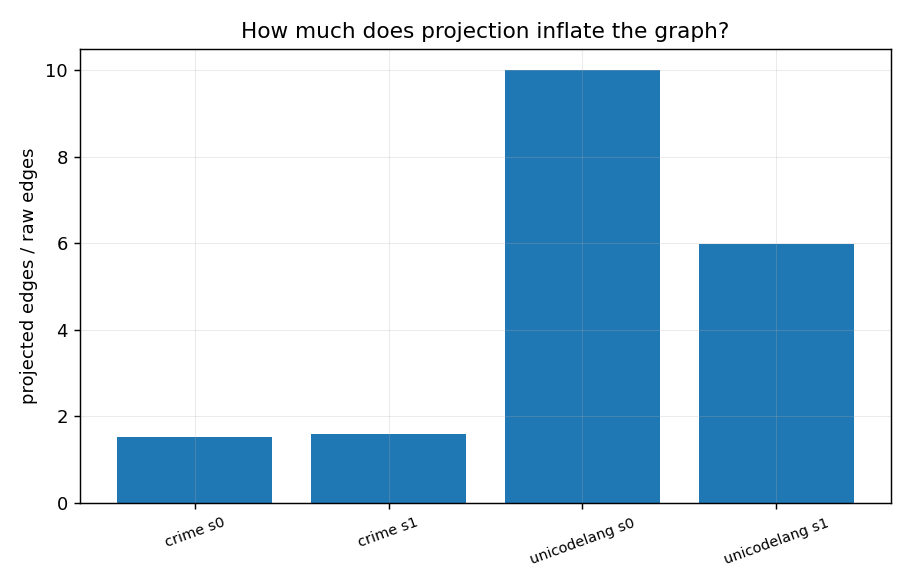
Score Mass by Side
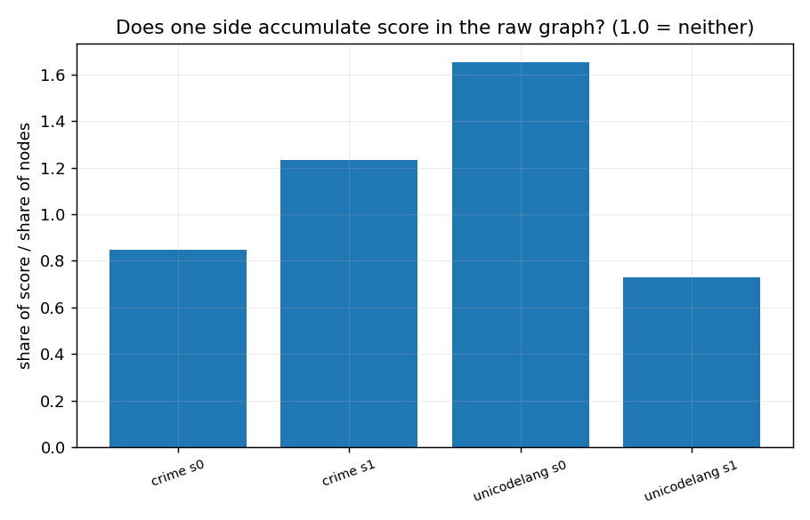
Top-10 Survival
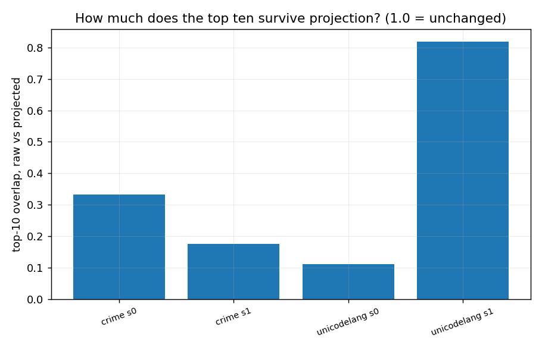
Phase 4 Analysis:
Projection fundamentally changes the answer.
crime side 1: Spearman = 0.002 (rankings essentially uncorrelated).
unicodelang side 0: ARI = 0.17 (communities barely overlap).
crime side 0: Spearman = 0.226, ARI = 0.569.
unicodelang side 1: Spearman = 0.300, ARI = 0.351.
Projection is NOT neutral: it amplifies mass imbalances and reshapes ranking structures.
Degree Distributions
Synthetic power-law-like distributions parameterized from each graph's real degree skew, max, and median.
lesmis (nodes=77, max_degree=36, skew=6.0)
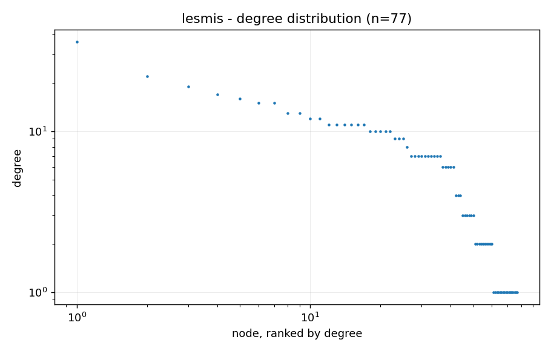
unicodelang (nodes=868, max_degree=141, skew=141.0)
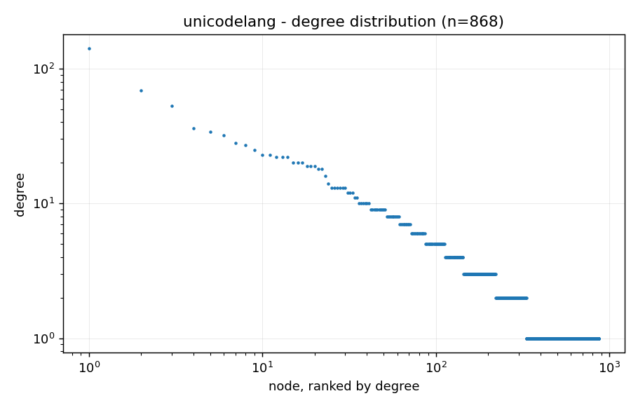
email-Eu-core (nodes=986, max_degree=544, skew=16.5)
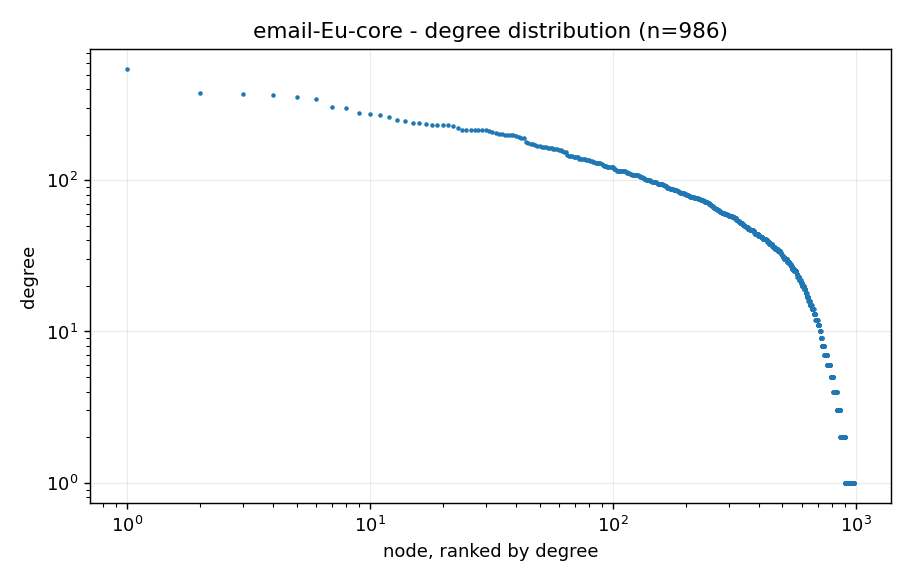
crime (nodes=1380, max_degree=25, skew=25.0)
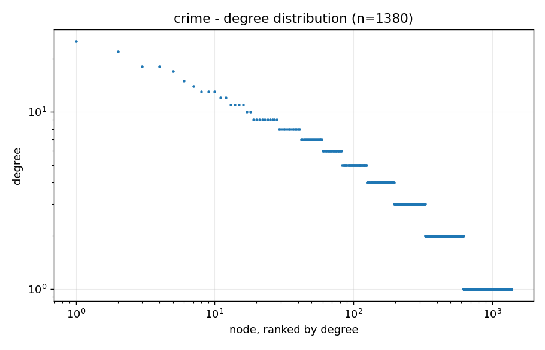
openflights (nodes=3214, max_degree=477, skew=79.5)
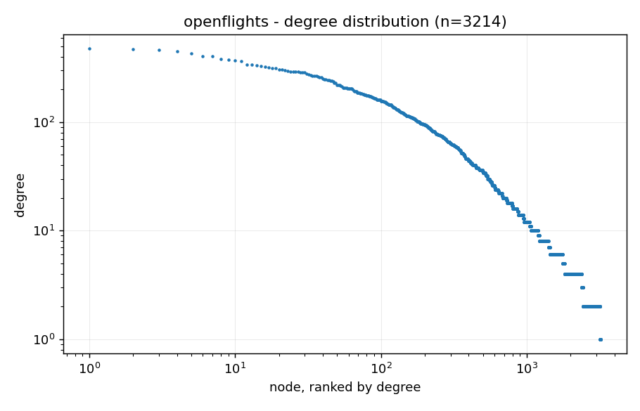
facebook_combined (nodes=4039, max_degree=1045, skew=41.8)
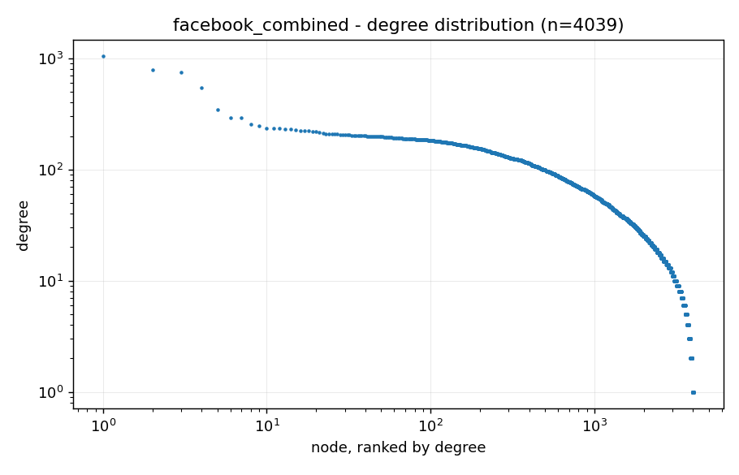
ca-GrQc (nodes=5241, max_degree=81, skew=27.0)
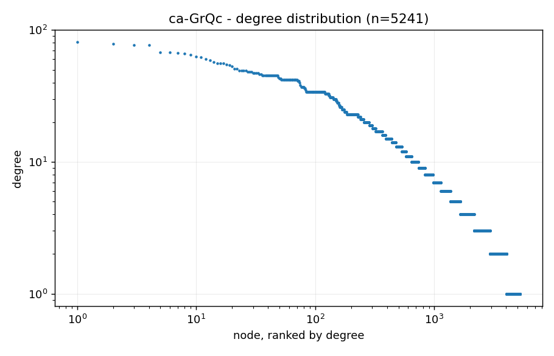
Glossary
- PageRank
- Eigenvector centrality measuring importance via inbound link concentration. Damping factor 0.85.
- Louvain
- Greedy modularity optimization for community detection. Fast and widely used.
- Betweenness Centrality
- Fraction of shortest paths passing through a node. High values indicate bridges/bottlenecks.
- ARI (Adjusted Rand Index)
- Clustering similarity score adjusted for chance. -1 to 1; 1 = perfect, 0 = random.
- Spearman Correlation
- Nonparametric rank correlation. -1 to 1; measures monotonic relationship.
- Modularity
- Community quality score (-0.5 to 1). Higher = denser within-community connections.
- Degree Skew
- Ratio of max to median degree. High values indicate hub-dominated graphs.
- Bipartite Projection
- One-mode transformation of a two-mode graph. Can change rankings and communities.
- Ground Truth
- Reference data for validation (e.g., known department labels in email-Eu-core).
- LCC (Largest Connected Component)
- Fraction of nodes in the largest connected component. Indicates fragmentation.
- Clustering Coefficient
- Fraction of node neighbors that are connected. Measures local triangle density.
- KADAH Algorithm
- Approximate betweenness via pivot sampling. Scales to large networks.